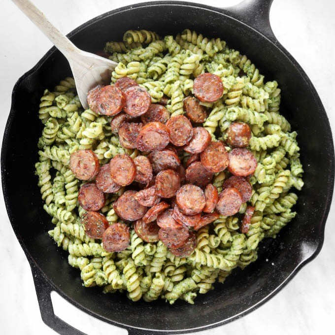
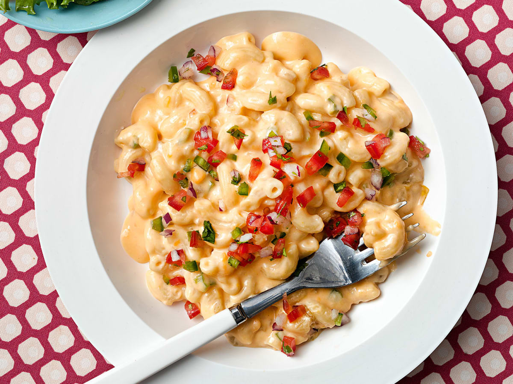
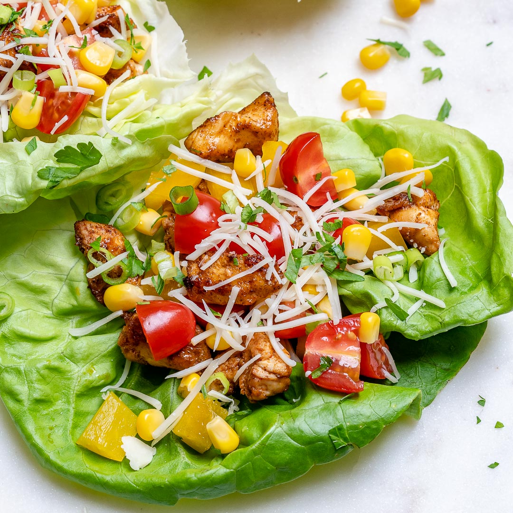
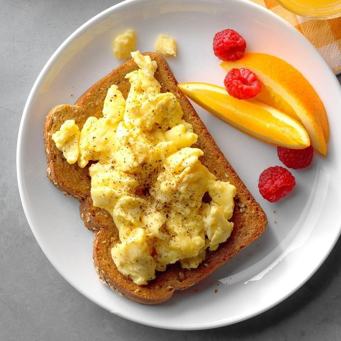

Spicy Sausage and Pesto Dish

Ingredients
- Package of Sausage
- 1/2 an Onion
- Garlic
- Pasta of your choice
- Pesto Sauce
- Salt, Pepper, and Red Crushed Peppers
Instructions
- Boil a pot of water and add some salt to it. Once it is brought to a boil add the pasta. When the pasta is soft, drain the noodles.
- Cut the sausage and onion up into to desired size.
- Add the cutting to a pan and cook it over medium heat. Add garlic, red crushed peppers, salt, and peppers as the sausage cooks on both sides.
- Add the sausage and onion to the pot of noodles and then add in the pesto sauce and stir throughly.
This is a great meal to serve to friends or eat alone. It can take up to 15-20 mins. I enjoy cooking this meal when I need something quick and easy for dinner, there is always going to be some left overs as this is a filling meal. If you are looking to take more to this recipe, I suggest adding more vegetables like green bell pepper and mushrooms and topping it with parmesan cheese.
Macaroni with color

Ingredients
- Macaroni and Cheese Box (Great Value brand works)
- One Jalopeno
- One Tomato
- 1/2 Onion
- Salt and Pepper
- 1/4 Milk (any percentage will work)
- 4 Tbsp Butter
Instructions
- 1. Bring a pot of water to a boil and add the macaroni in. Stir occasionally until the macaroni noodles are tender.
- Drain the pasta.
- While the noodles are cook, cut up the jalapeno, tomato and onion into small pieces.
- Add the butter and milk into the noodles and stir in the Marconi and cheese mix.
- Add salt and pepper. Serve into a bowl and enjoy.
I normally make this meal during Lent when I cannot eat meat and still want to enjoy cooking a meal without meat. This makes my cheap 32 cent macaroni into more of a meal that is enjoyable. This whole meal can cost up to 2 dollars which is one of the cheapest meals I make. An alternative to this would be making Pico de Gallo and refrigerating it then adding it to the macaroni and cheese when it is time.
Lettuce tacos

Ingredients
- Romaine Lettuce
- Onion and Garlic
- Rice
- Chicken0
- Salt, Pepper, and Paprika
- 1 Tbsp of Oil
- Desired Toppings
Instructions
- 1. Cut up your chicken and massage it with oil then proceed to apply the seasoning and garlic to the chicken and continue massaging it in. When the chicken is covered in seasoning throw it into a pan for it to cook.
- While the chicken to cooking, start the rice in either a pan or a rice cooker. You can add a little bit of salt to it as it begins cooking.
- Cut up some onions while the main ingredients are cooking. When the chicken is almost done throw in the cut-up onion into the pan with the chicken and let them finish cooking together.
- Wash the Lettuce and place the desired amount onto a plate.
- Fill the lettuce taco up with your chicken, rice, and other desired toppings.
I enjoy cooking this meal when I am trying to be healthy. This is a great alternative for normal tacos, it is less carbs and instead of rice or with rice you can add beans to this meal to make your taco fuller. This meal is great for those who are trying to lose weight but do not want to give up the foods they eat. There are different toppings that can be added to this recipe and would still make it healthy like, corn, tomatoes, and avocado. This is healthy eating done right.
Open-Faced Egg Sandwiches

Ingredients
- 4 Large Egg Whites
- 2 Large Eggs
- 2 Tbsps of Grated Parmesan Cheese
- 2 Tbsps of Butter
- 2 Slices of Whole Wheat Bread
- 1/8 Tsp Dried Rosemary, Crushed
- 1/8 Tsp Pepper
Instructions
- Heat a small skillet coated with cooking spray over medium-high heat. Whisk the egg whites, eggs and cheese; add to skillet. Cook and stir until set.
- Spread butter over toast; top with egg mixture. Sprinkle with rosemary and pepper. Serve immediately.
I enjoy eating this dish for breakfast and sometimes a quick lunch. This is a simple and quick meal to make, it is also filling. Sometimes when I have more time I will add a side of hashbrowns to this meal or some green bell pepper and onion to complete this meal.